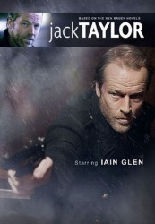

")
 
 IMDB-Wertung: 7.1 / 10
IMDB-Wertung: 7.1 / 10  Metascore:
Metascore: 
Die Spielfilmreihe basiert auf Ken Bruens Bestsellerromanen um den scharfsinnigen, gutmütigen Ex-Polizisten Jack Taylor. Ort des Geschehens ist das Gebiet rund um die Stadt Galway an der felsigen Westküste Irlands. Früher war Taylor ein engagierter Polizist, der hin und wieder gern zu tief ins Glas schaute. Heute ist er ein Privatdetektiv, der immer wieder gern in ernsthafte Schwierigkeiten gerät. Weil seine „Operationszentrale“ eine Kneipe ist, blickt er seinen Dämonen täglich direkt ins Auge. Die Region um Galway herum, an der die weltweite Wirtschaftskrise alles andere als spurlos vorübergegangen ist, bietet düsteren Gestalten eine perfekte Kulisse für ihre kriminellen Machenschaften. Und diejenigen, die nicht unter der Krise zu leiden hatten, haben noch jede Menge kriminelle Energie aus den 60er- und 70er-Jahren übrig, als das traditionelle soziale und politische Gefüge Irlands auseinanderbrach. Taylors Fälle spiegeln diesen Umbruch wider und führen ihn in die finstersten Winkel der menschlichen Seele
Jahr: 2010
Dauer: 82 Minuten
FSK:
Land: Irland Studio: Edel Media & EntertainmentTonspuren: DD5.1 - ,
Untertitel:
Auflösung: 1080p (1916x1080) Größe: 3389 MB
Regisseur: Stuart Orme
Drehbuch: James Fogle
Soundtrack:
Darsteller:
 Iain Glen als Jack Taylor
Iain Glen als Jack Taylor Ralph Brown als Sutton
Ralph Brown als Sutton Nora-Jane Noone als Kate
Nora-Jane Noone als Kate Lalor Roddy als Padraic
Lalor Roddy als PadraicDatei: X:\HD-Serien\Jack Taylor\Jack Taylor S01E01 Der Ex Bulle.mkv seit 09.04.2017
Festplatte: HD Serien(I-ST)
 Es gibt insgesamt 182 Filme in der Gruppe 'HD-Serien'
Es gibt insgesamt 182 Filme in der Gruppe 'HD-Serien'